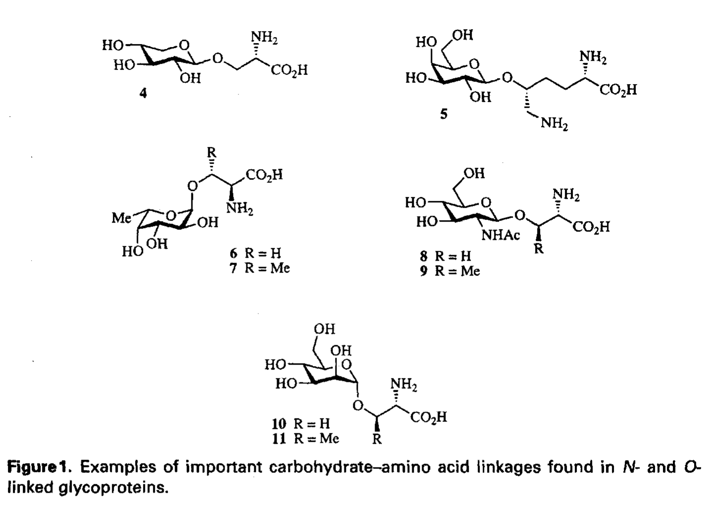
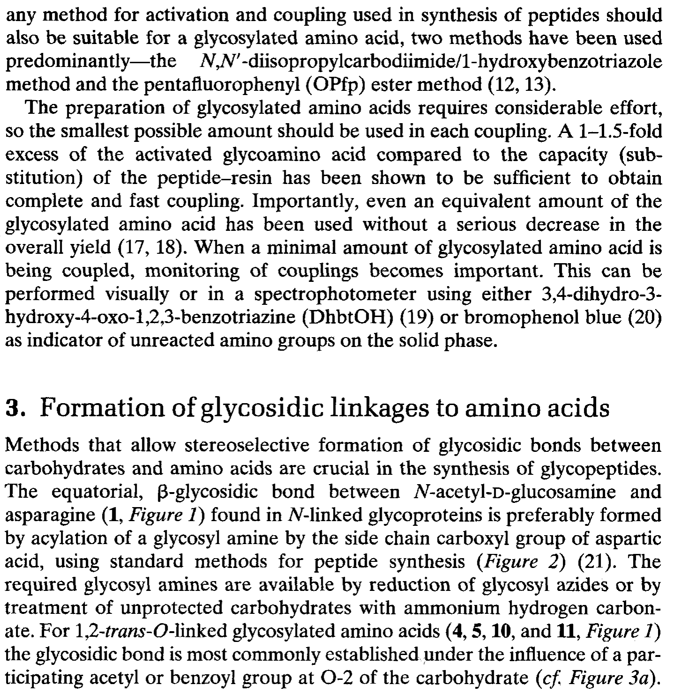
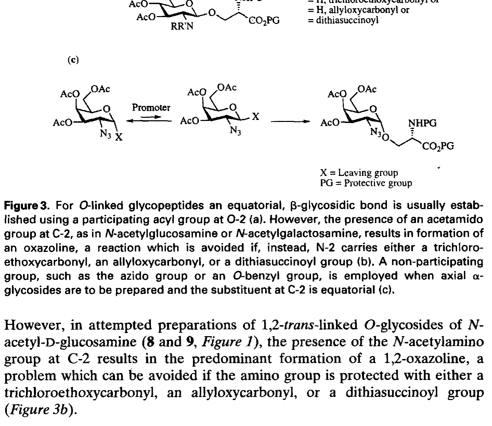
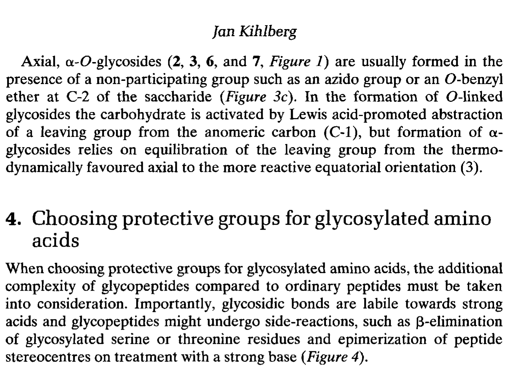
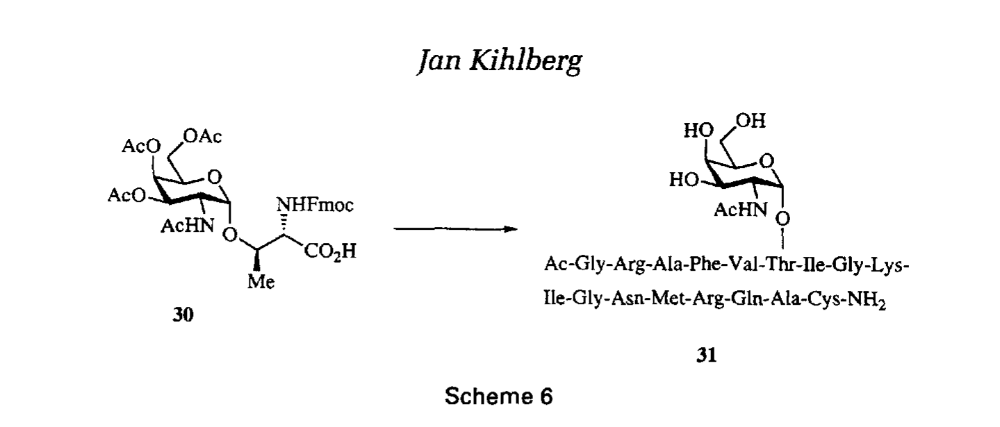

第八章 糖肽合成
Glycopeptide Synthesis
作者：Jan Kihlberg 书页：195–214
糖基化（glycosylation）是自然界中最复杂、最多样化的蛋白质翻译后修饰。与磷酸化（只有一种修饰类型）不同，糖基化涉及多种糖分子（葡萄糖、半乳糖、甘露糖、N-乙酰葡萄糖胺、N-乙酰半乳糖胺、岩藻糖、唾液酸等）通过不同类型的糖苷键（glycosidic bond）连接到蛋白质上。不仅如此，糖链可以是线性的或分支的，长度从一个单糖到数十个糖残基不等，形成了极大的结构多样性。
据统计，超过 50% 的人类蛋白质发生糖基化修饰。糖蛋白（glycoprotein）在细胞识别、免疫应答、蛋白质折叠和稳定性、受精、发育、以及疾病（如癌症转移）中发挥关键作用。然而，从生物体中分离的糖蛋白通常是糖形（glycoforms）的混合物——即多肽序列相同但糖链结构不同的分子集合。这种微观不均一性严重阻碍了对糖链功能的精确研究。
糖肽（glycopeptide）的化学合成——即通过 Fmoc-SPPS 或液相方法合成具有确定糖链结构的糖肽——是解决这一问题的核心手段。合成的糖肽可用于：（1）研究糖链对肽/蛋白质结构和构象的影响；（2）揭示糖链在分子识别中的作用（如凝集素结合）；（3）开发糖疫苗和糖药物；（4）制备糖蛋白的均一糖形用于生物物理研究；（5）研究糖基转移酶的底物特异性。
本章聚焦于 Fmoc-SPPS 合成糖肽的方法学。糖肽合成的核心挑战在于：糖基（glycan）含有多个游离羟基，需要保护基策略；糖苷键对酸和碱都敏感，与 SPPS 中使用的强酸（TFA）和强碱（哌啶）条件不兼容；糖基化氨基酸构建块立体化学复杂，制备困难。

Figure 1. 生物学中重要的糖-氨基酸连接结构（N-连接和O-连接糖苷键示例）
糖蛋白中的糖-氨基酸连接主要分为两大类——N-连接（N-linked）和 O-连接（O-linked），此外还存在一些较少见的连接类型。理解这些连接的化学本质是设计糖肽合成策略的基础。
N-连接糖基化（N-glycosylation）是指糖链通过 N-糖苷键连接到天冬酰胺（Asparagine, Asn, N）侧链的酰胺氮上。在生物体中，N-连接糖基化发生在内质网（ER）中，由寡糖基转移酶（oligosaccharyltransferase, OT）催化，将预先组装的寡糖（Glc₃Man₉GlcNAc₂）整体转移到Asn-Xxx-Ser/Thr（Xxx ≠ Pro）共识序列（sequon）中的 Asn 上。最小的 N-连接糖结构是N-乙酰葡萄糖胺（N-acetylglucosamine, GlcNAc）通过 β-N-糖苷键连接到 Asn。
N-连接糖肽的关键特征：
连接键：Asn 侧链 -CO-NH-(GlcNAc)，β构型
糖供体：GlcNAc（N-acetylglucosamine）
化学稳定性：N-糖苷键相对稳定，对弱酸和弱碱有一定耐受性
共识序列：Asn-Xxx-Ser/Thr（其中 Xxx 可以是除 Pro 外的任何氨基酸）
O-连接糖基化（O-glycosylation）最常见的形式是糖链通过 O-糖苷键连接到丝氨酸（Ser, S）或苏氨酸（Thr, T）侧链的羟基氧上。与 N-连接糖基化不同，O-连接糖基化发生在高尔基体中，由不同的糖基转移酶逐步添加糖残基。最典型的 O-连接糖以 N-乙酰半乳糖胺（N-acetylgalactosamine, GalNAc）作为起始糖残基连接到 Ser/Thr 上（即 Tn 抗原）。
O-连接糖肽的关键特征：
连接键：Ser/Thr 侧链 -O-(GalNAc)，α构型（粘蛋白型，mucin-type）
糖供体：GalNAc（最常见的起始糖），也可以是 GlcNAc、Man、Fuc 等
化学稳定性：O-糖苷键对酸敏感——在强酸条件下容易断裂
无明确共识序列——O-连接糖基化的位点选择由酶的底物特异性决定
羟脯氨酸（hydroxyproline, Hyp）的 O-连接糖苷键——植物糖蛋白中常见（如 Hyp-Araf）
C-连接糖苷键——色氨酸（Trp）的 C2 位通过 C-C 键连接甘露糖（C-Man-Trp），非常稀有，见于某些凝血因子
羟赖氨酸（hydroxylysine, Hyl）的 O-连接糖苷键——胶原蛋白中（Glc-Gal-Hyl）
在本章中，主要讨论 N-连接和 O-连接（粘蛋白型）糖肽的合成，因为这两类在生物学和医学研究中最为重要。

Figure 2. N-连接糖肽通过糖基胺酰化 (glycosylamination) 合成的策略
N-连接糖肽的 Fmoc-SPPS 合成几乎总是采用构建块法（building block approach）：即使用预成型的糖基化天冬酰胺（glycosylated asparagine）构建块作为固相合成的原料。这是因为 N-连接糖苷键相对稳定，可以耐受 SPPS 条件，使得直接引入糖基化 Asn 成为可能。
合成策略的核心步骤是：（1）首先在液相中合成糖基化 Asn 构建块；（2）将该构建块作为普通氨基酸参与 Fmoc-SPPS；（3）完成链组装后进行切割和全局脱保护。
糖基化 Asn 构建块（如 Fmoc-Asn(GlcNAc(Ac)₃)-OH）的制备通常采用糖基胺法（glycosylamine method）：
步骤 1：制备糖基胺（glycosylamine）——将 GlcNAc 与饱和 NH₄HCO₃ 水溶液反应，糖的异头碳（anomeric carbon）上的 OH 转变为 NH₂，形成 1-氨基糖
步骤 2：糖基胺与活化的天冬氨酸衍生物偶联——如 Fmoc-Asp(OPfp)-OH（五氟苯酯活化）与糖基胺在缓冲水溶液中反应，形成 N-糖苷键
步骤 3：糖羟基保护——通常用乙酸酐/吡啶将所有游离羟基乙酰化
步骤 4：纯化——硅胶柱色谱或 HPLC 纯化
产物：Fmoc-Asn(GlcNAc(Ac)ₙ)-OH，可直接用于 SPPS
糖分子含有多个羟基，在 SPPS 中必须保护以防止副反应。常用的保护基策略有两种：
（1）乙酰酯保护（Acetyl ester, Ac）
所有糖羟基用乙酰基保护（-OAc）
TFA 稳定——在切割条件下不会脱落
去除方法：皂化（saponification）—— NaOMe/MeOH (pH 8-9), 或 NH₃/MeOH
风险：碱性皂化条件可能引起肽链中 Asp/Glu 侧链的酯交换（transesterification），或 C 端肽键的水解
（2）苄基/苯甲酰保护（Benzyl/Benzoyl, Bn/Bz）
糖羟基用苄基（Bn, -OBn）或苯甲酰（Bz, -OBz）保护
TFA 稳定
去除方法：催化氢解（hydrogenolysis, H₂/Pd-C）
风险：不适用于含 Cys（二硫键还原）或 Met（硫醚被毒化催化剂）的肽
在实际应用中，乙酰酯保护是最常用的策略，因为大多数糖肽不含对碱敏感的序列，且皂化条件可以在温和 pH 下控制。对于含有 Met 或 Cys 的糖肽，需要考虑替代策略。
使用糖基化 Asn 构建块进行 Fmoc-SPPS 与普通肽合成基本相同，但需要注意：
构建块溶解性：Fmoc-Asn(GlcNAc(Ac)ₙ)-OH 在 DMF 中溶解性较差，可能需要加温或使用 DMSO 助溶
偶联效率：糖基化 Asn 位阻较大，建议使用 HATU 或 PyBOP 作为偶联试剂，双偶联
脱 Fmoc：20% 哌啶标准条件——N-糖苷键对哌啶稳定
监测：Kaiser 茚三酮检测可能因糖基屏蔽而不灵敏——建议使用氯醌（chloranil）检测

Figure 3. O-连接糖肽的 β-糖苷键 (β-glycosidic bond) 合成策略
O-连接糖肽的合成同样主要采用构建块法。然而，O-连接糖肽合成比 N-连接更具挑战性，原因在于：（1）O-糖苷键对酸更敏感——在 TFA 切割条件下可能断裂；（2）α-O-糖苷键（如 GalNAcα-Ser/Thr）的立体选择性合成更加困难。
合成策略同样是：（1）制备糖基化 Ser/Thr 构建块；（2）Fmoc-SPPS 组装；（3）切割和脱保护。关键在于步骤 1——O-糖苷键的立体选择性形成。
O-连接糖肽构建块（如 Fmoc-Thr(GalNAc(α1→O)-OH）的核心步骤是糖苷键的形成反应（glycosylation reaction）：
糖基供体（glycosyl donor）的选择：
三氯乙酰亚胺酯（trichloroacetimidate）——最常用的糖基供体，由糖的异头羟基与 Cl₃CCN 反应制得
卤代糖（glycosyl halide）——如糖基溴化物（Koenigs-Knorr 反应）
硫代糖苷（thioglycoside）——需要 NIS/TfOH 或 Ph₂SO/Tf₂O 活化
正戊烯基糖苷（n-pentenyl glycoside）——NIS 活化
糖苷键形成的立体控制：
邻基参与效应（neighboring group participation）：C2 位的保护基（如 N-乙酰或 N-苯二甲酰亚胺）通过形成环状中间体确保 1,2-trans（β）构型
非邻基参与：如果 C2 无参与基团（如苄基保护），则得到 α/β 混合物——需要色谱分离
对于粘蛋白型 GalNAc α-Ser/Thr：GalNAc 的 C2 位有 N-乙酰基，但 α 构型的选择性需要精心控制条件
典型的 O-连接构建块制备流程：
步骤 1：Fmoc-Ser/Thr-OH 的羧基和氨基分别保护（如 Fmoc 和 tBu 酯）
步骤 2：糖基供体 + Fmoc-Ser/Thr-OR → 糖苷键形成（TMSOTf 或 BF₃·Et₂O 催化）
步骤 3：糖羟基乙酰化保护
步骤 4：C 端 tBu 酯去除（TFA），获得 Fmoc-Ser/Thr(GalNAc(Ac)₃)-OH 构建块

Figure 4. O-糖苷键在强酸条件下的不稳定性——TFA 介导的糖苷键水解
与 N-糖苷键不同，O-糖苷键（特别是连接到 Ser/Thr 侧链羟基的键）对酸敏感。在 SPPS 的最终切割步骤中，通常使用高浓度 TFA（90-95%）来去除侧链保护基和切割树脂连接。这种强酸条件可能导致 O-糖苷键部分断裂（裂解），释放出游离的 Ser/Thr 残基和糖分子。
影响 O-糖苷键酸稳定性的因素：
糖残基类型：呋喃糖苷（furanoside）比吡喃糖苷（pyranoside）更不稳定
连接的氨基酸：Thr-O-糖苷比 Ser-O-糖苷稍稳定（Thr 的额外甲基提供了一些空间保护）
糖链长度：较长糖链的末端糖残基比近端更容易酸解脱落
酸浓度和时间：TFA 浓度越高、时间越长，O-糖苷键断裂越严重
保护 O-糖苷键的策略：
降低切割温度：在 0-4°C 进行 TFA 切割
缩短切割时间：从标准的 2-3 h 缩短至 30-60 min
使用较低浓度的 TFA：如果侧链保护基允许（如使用酸敏性保护基的替代方案）
后处理立即中和：切割后迅速用冰冷乙醚沉淀，然后冻干，避免残留 TFA 继续作用
糖分子含有多个（通常 4-8 个）游离羟基，在 SPPS 中必须选择性保护。保护基策略直接影响糖肽合成的成功与否。以下是三种主要策略的详细比较：
保护方式：所有游离羟基用乙酸酐/吡啶或 AcCl/Py 乙酰化
稳定性：TFA 稳定（切割中不脱落）；对哌啶稳定（20% piperidine/DMF）
去除方法：皂化——NaOMe/MeOH (pH 8-9, 0°C → rt, 1-12 h) 或 NH₃/MeOH
优点：保护基引入简单、稳定、通用性好
风险/缺点：碱性皂化可能引起 Asp/Glu 侧链酯交换、肽键部分水解、β-消除（pSer/pThr）
皂化条件优化建议：使用温和条件（NaOMe 在 MeOH 中，pH ≈ 9, 0°C），密切监控反应进程（TLC 或 LC-MS），反应完成后立即用弱酸（如 AcOH 或 Amberlite IR-120 树脂）中和。对于含 Asp 的肽，应特别注意天冬酰亚胺形成的风险。
保护方式：苄基化（BnBr/NaH）或苯甲酰化（BzCl/Py）
稳定性：TFA 稳定；哌啶稳定
去除方法：催化氢解——H₂ (1-4 atm), Pd/C 或 Pd(OH)₂/C, MeOH/H₂O, rt, 2-24 h
优点：去除条件温和（中性，不涉及酸碱）
风险/缺点：含 Cys 的肽不可用（Cys 毒化 Pd 催化剂，且二硫键被还原）；Met 也有类似问题；需要加压氢化设备
叔丁基二甲基硅基（TBDMS）：对酸和碱都稳定，用 TBAF (tetrabutylammonium fluoride) 去除；用于需要正交保护的复杂糖链
烯丙基（allyl）：Pd(0) 催化去除，正交性好
Lev（levulinoyl）：肼胺去除，正交保护策略中有用
对于复杂糖肽（含有不同类型糖残基或分支糖链），可能需要正交保护基策略——即使用多种可在不同条件下分别去除的保护基，实现糖链的选择性延伸或修饰。这在糖肽合成中属于高级课题。

Scheme 6. 糖肽合成的总体方案：从构建块准备到 SPPS 组装到全局脱保护
一个典型的糖肽 Fmoc-SPPS 合成包括以下步骤：
步骤 1：制备或购买糖基化氨基酸构建块（如 Fmoc-Asn(GlcNAc(Ac)₃)-OH 或 Fmoc-Thr(GalNAc(α1→O)-OH）
步骤 2：按照目标序列从 C 端向 N 端进行 Fmoc-SPPS 组装
步骤 3：当序列到达糖基化位点时，引入糖基化构建块（通常需要双偶联）
步骤 4：完成序列组装后，树脂洗涤和真空干燥
步骤 5：TFA 切割（低温，短时间，尤其是 O-连接糖肽）
步骤 6：乙醚沉淀，溶解于水/ACN，冻干
步骤 7：全局脱保护——去除糖羟基保护基（皂化或氢解）
步骤 8：RP-HPLC 纯化，LC-MS 表征
偶联条件：
普通残基：Fmoc-AA-OH (3 eq.), HBTU (2.9 eq.), DIPEA (6 eq.), DMF, 30-45 min
糖基化残基：Fmoc-AA(Sugar)-OH (2-3 eq.), HATU (1.9-2.9 eq.), DIPEA (4-6 eq.), DMF (可加 20% DMSO 助溶), 1-2 h, 双偶联
脱 Fmoc：20% 哌啶 in DMF, 5 min + 10 min——对糖肽安全
切割条件：
N-连接糖肽：TFA/TIS/H₂O (95:2.5:2.5), rt, 2-3 h——N-糖苷键较稳定
O-连接糖肽：TFA/TIS/H₂O (95:2.5:2.5), 0-4°C, 30-60 min——降低温度和时间保护 O-糖苷键
切割液清除剂（scavengers）：TIS (triisopropylsilane) 和 EDT 可清除 tBu 阳离子
全局脱保护：
Ac 保护基去除：NaOMe in MeOH, pH 8-9, 0°C → rt, 监控至完全
Bn/Bz 保护基去除：H₂ (1 atm), 10% Pd/C, MeOH/H₂O (9:1), rt, 4-16 h
脱保护后立即用 RP-HPLC 纯化或直接冻干
糖肽由于含有亲水的糖基和疏水的肽段，通常具有两亲性（amphiphilic）。有趣的是，糖肽的水溶性通常比对应的非糖基化肽更好——糖基的多个羟基增加了亲水性。这一特点有利于：
RP-HPLC 纯化——糖肽在 C18 柱上的保留时间通常缩短
水溶液中的操作——冻干、浓度测定更方便
生物学实验——糖肽在水性缓冲液中的溶解度更好
糖基化可以显著影响肽的构象和刚性。O-连接的 GalNAc（粘蛋白型糖基化）由于体积较大，可以使 Ser/Thr 附近的骨架二面角偏转，诱导 β-折叠或转角（turn）结构。N-连接的 GlcNAc 可以通过与骨架 NH 形成氢键，稳定特定的二级结构（如 β-转角）。这些构象效应对于糖肽的生物活性和免疫原性至关重要。
问题：糖基化构建块偶联不全 → 方案：HATU 双偶联，增加当量数，延长反应时间
问题：O-糖苷键在切割时部分断裂 → 方案：降低切割温度到 0°C，缩短时间到 30 min
问题：皂化后肽降解 → 方案：使用更温和的 NH₃/MeOH 替代 NaOMe，降低 pH 和温度
问题：氢解时 Pd 催化剂中毒 → 方案：确保肽中不含 Cys/Met，或改用其他保护基策略
问题：构建块溶解困难 → 方案：使用 DMF/DMSO 混合溶剂（3:1），或轻微加温至 40°C
糖疫苗开发——如 Tn 抗原、TF 抗原糖肽用于抗癌疫苗
凝集素（lectin）底物和抑制剂研究
糖蛋白结构-功能研究——通过比较不同糖形的活性
糖基化对蛋白水解稳定性的影响——糖基化可保护肽免受蛋白酶降解
药物递送——糖肽可作为靶向载体（如 GalNAc 偶联药物）
糖基化是最复杂的 PTM，糖肽合成对研究糖生物学至关重要
两大连接类型：N-连接（Asn-GlcNAc，β构型）和 O-连接（Ser/Thr-GalNAc，α构型）
糖肽合成的核心挑战：糖基多羟基需保护 + 糖苷键对酸碱敏感
N-连接糖肽：用预成型 Fmoc-Asn(GlcNAc(Ac)ₙ)-OH 构建块，N-糖苷键较稳定
O-连接糖肽：用预成型 Fmoc-Ser/Thr(GalNAc)-OH 构建块，O-糖苷键对酸敏感
糖苷键形成需立体选择性——邻基参与确保 1,2-trans（β）构型
糖羟基保护：乙酰酯（最常用，皂化去除）> 苄基（氢解去除，不兼容 Cys/Met）
O-糖肽切割必须低温短时间，防止糖苷键断裂
糖基化氨基酸位阻大→HATU 双偶联，DMSO 助溶
糖肽水溶性好有利于纯化；糖基化影响肽构象和生物活性